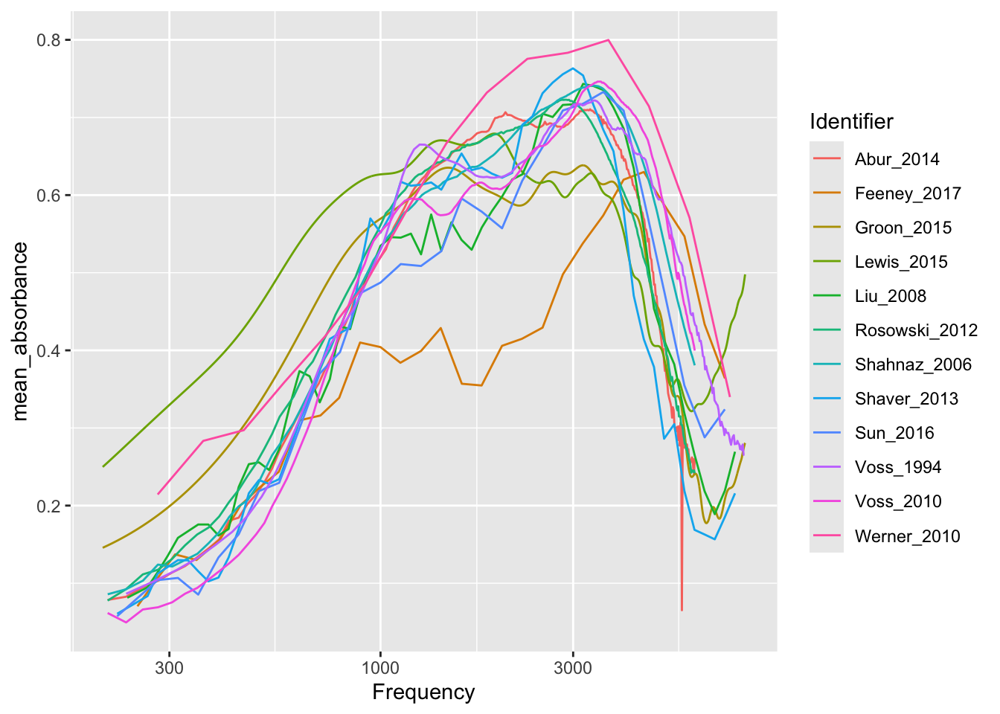
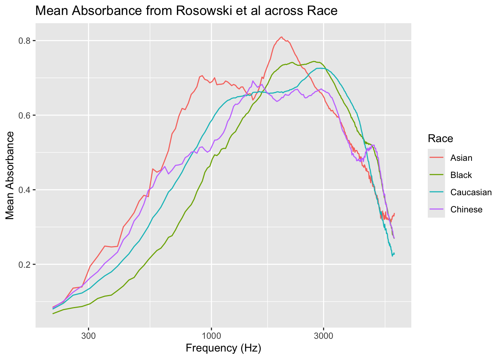

SHOW TABLES;| Tables_in_wai |
|---|
| Codebook |
| Measurements |
| Measurements_pre2020 |
| PI_Info |
| PI_Info_OLD |
| Subjects |
| Subjects_pre2020 |
Natalie Roston
November 26, 2024
To replicate the table in Voss (2020), I will be pulling the measurements, PI info, and subject tables from the scidb.smith.edu database. After making sure I understand the data structure, I will turn the Frequency data to a log scale. I will then select and join the relevant data before preparing it for visualization. The above steps are in SQL, but I will use R’s ggplot package to produce the visualization.
| Tables_in_wai |
|---|
| Codebook |
| Measurements |
| Measurements_pre2020 |
| PI_Info |
| PI_Info_OLD |
| Subjects |
| Subjects_pre2020 |
This shows us the different tables in the database.
| Identifier | SubjectNumber | Session | Ear | Instrument | Age | AgeCategory | EarStatus | TPP | AreaCanal | PressureCanal | SweepDirection | Frequency | Absorbance | Zmag | Zang |
|---|---|---|---|---|---|---|---|---|---|---|---|---|---|---|---|
| Abur_2014 | 1 | 1 | Left | HearID | 20 | Adult | Normal | -5 | 4.42e-05 | 0 | Ambient | 210.938 | 0.0333379 | 113780000 | -0.233504 |
| Abur_2014 | 1 | 1 | Left | HearID | 20 | Adult | Normal | -5 | 4.42e-05 | 0 | Ambient | 234.375 | 0.0315705 | 103585000 | -0.235778 |
| Abur_2014 | 1 | 1 | Left | HearID | 20 | Adult | Normal | -5 | 4.42e-05 | 0 | Ambient | 257.812 | 0.0405751 | 92951696 | -0.233482 |
| Abur_2014 | 1 | 1 | Left | HearID | 20 | Adult | Normal | -5 | 4.42e-05 | 0 | Ambient | 281.250 | 0.0438399 | 86058000 | -0.233421 |
| Abur_2014 | 1 | 1 | Left | HearID | 20 | Adult | Normal | -5 | 4.42e-05 | 0 | Ambient | 304.688 | 0.0486400 | 79492800 | -0.232931 |
This helped me understand the data structure of Measurements.
| Identifier | Year | Authors | AuthorsShortList | Title | Journal | URL | Abstract | DataSubmitterName | DataSubmitterEmail | DateSubmitted | PI_Notes |
|---|---|---|---|---|---|---|---|---|---|---|---|
| Abur_2014 | 2014 | Defne Abur, Nicholas J. Horton, and Susan E. Voss | Abur et al. | Instrasubject variability in power reflectance | J Am Acad Audiol | https://www.ncbi.nlm.nih.gov/pubmed/25257718 | “ |
Purpose: This study investigates test-retest features of power reflectance, including comparisons of intrasubject versus intersubject variability and how ear-canal measurement location affects measurements.
Research design: Repeated measurements of power reflectance were made at about weekly intervals. The subjects returned for four to eight sessions. Measurements were made at three ear-canal locations: a deep insertion depth (with a foam plug flush at the entrance to the ear canal) and both 3 and 6 mm more lateral to this deep insertion.
Study sample: Repeated measurements on seven subjects are reported. All subjects were female, between 19 and 22 yr old, and enrolled at an undergraduate women’s college.
Data collection and analysis: Measurements on both the right and left ears were made at three ear-canal locations during each of four to eight measurement sessions. Random-effects regression models were used for the analysis to account for repeated measures within subjects. The mean power reflectance for each position over all sessions was calculated for each subject.
Results: The comparison of power reflectance from the left and right ears of an individual subject varied greatly over the seven subjects; the difference between the power reflectance measured on the left and that measured on the right was compared at 248 frequencies, and depending on the subject, the percentage of tested frequencies for which the left and right ears differed significantly ranged from 10% to 93% (some with left values greater than right values and others with the opposite pattern). Although the individual subjects showed left-right differences, the overall population generally did not show significant differences between the left and right ears. The mean power reflectance for each measurement position over all sessions depended on the location of the probe in the ear for frequencies of less than 1000 Hz. The standard deviation between subjects’ mean power reflectance after controlling for ear (left or right) was found to be greater than the standard deviation within the individual subject’s mean power reflectance. The intrasubject standard deviation in power reflectance was smallest at the deepest insertion depths.
Conclusions: All subjects had differences in power reflectance between their left and right ears at some frequencies; the percentage of frequencies at which differences occurred varied greatly across subjects. The intrasubject standard deviations were smallest for the deepest probe insertion depths, suggesting clinical measurements should be made with as deep an insertion as practically possible to minimize variability. This deep insertion will reduce both acoustic leaks and the effect of low-frequency ear-canal losses. The within-subject standard deviations were about half the magnitude of the overall standard deviations, quantifying the extent of intrasubject versus intersubject variability.
” |Susan Voss |svoss@smith.edu |24-Aug-2016 |Measurements made on 7 subjects across multiple sessions and 3 probe locations for each subject. Database includes measurements at only the deepest insertion depth (Position 1) and Channel B only. |
I explored the PI_Info data by looking at a particular study using Identifier; Abur (2014).
| Identifier | SubjectNumber | Session | Ear | Instrument | Age | AgeCategory | EarStatus | TPP | AreaCanal | PressureCanal | SweepDirection | Frequency | Absorbance | Zmag | Zang |
|---|---|---|---|---|---|---|---|---|---|---|---|---|---|---|---|
| Abur_2014 | 1 | 1 | Left | HearID | 20 | Adult | Normal | -5 | 4.42e-05 | 0 | Ambient | 210.938 | 0.0333379 | 113780000 | -0.233504 |
| Abur_2014 | 1 | 1 | Left | HearID | 20 | Adult | Normal | -5 | 4.42e-05 | 0 | Ambient | 234.375 | 0.0315705 | 103585000 | -0.235778 |
| Abur_2014 | 1 | 1 | Left | HearID | 20 | Adult | Normal | -5 | 4.42e-05 | 0 | Ambient | 257.812 | 0.0405751 | 92951696 | -0.233482 |
| Abur_2014 | 1 | 1 | Left | HearID | 20 | Adult | Normal | -5 | 4.42e-05 | 0 | Ambient | 281.250 | 0.0438399 | 86058000 | -0.233421 |
| Abur_2014 | 1 | 1 | Left | HearID | 20 | Adult | Normal | -5 | 4.42e-05 | 0 | Ambient | 304.688 | 0.0486400 | 79492800 | -0.232931 |
| Abur_2014 | 1 | 1 | Left | HearID | 20 | Adult | Normal | -5 | 4.42e-05 | 0 | Ambient | 328.125 | 0.0527801 | 73326200 | -0.232837 |
| Abur_2014 | 1 | 1 | Left | HearID | 20 | Adult | Normal | -5 | 4.42e-05 | 0 | Ambient | 351.562 | 0.0583192 | 68793600 | -0.232115 |
| Abur_2014 | 1 | 1 | Left | HearID | 20 | Adult | Normal | -5 | 4.42e-05 | 0 | Ambient | 375.000 | 0.0638881 | 64088600 | -0.231642 |
| Abur_2014 | 1 | 1 | Left | HearID | 20 | Adult | Normal | -5 | 4.42e-05 | 0 | Ambient | 398.438 | 0.0687025 | 60200600 | -0.231356 |
| Abur_2014 | 1 | 1 | Left | HearID | 20 | Adult | Normal | -5 | 4.42e-05 | 0 | Ambient | 421.875 | 0.0833181 | 56990900 | -0.228356 |
I then used the Identifier to explore the corresponding Measurements data.
SELECT p.Identifier, Year, AuthorsShortList,
COUNT(DISTINCT SubjectNumber, Ear) AS ears,
CONCAT(AuthorsShortList, " (" , year, ") " , "N=" ,
COUNT(DISTINCT SubjectNumber, Ear), "; ", Instrument) AS Legend
FROM PI_Info AS p
LEFT JOIN Measurements AS m ON m.Identifier = p.Identifier
WHERE p.Identifier IN ("Abur_2014", "Feeney_2017", "Groon_2015" ,"Lewis_2015",
"Liu_2008", "Rosowski_2012", "Shahnaz_2006", "Shaver_2013" , "Sun_2016",
"Voss_1994", "Voss_2010", "Werner_2010" ) AND Frequency > 200 AND
Frequency < 8000
GROUP BY Identifier, Instrument;| Identifier | Year | AuthorsShortList | ears | Legend |
|---|---|---|---|---|
| Abur_2014 | 2014 | Abur et al. | 14 | Abur et al. (2014) N=14; HearID |
| Feeney_2017 | 2017 | Feeney et al. | 57 | Feeney et al. (2017) N=57; preTitan |
| Groon_2015 | 2015 | Groon et al. | 21 | Groon et al. (2015) N=21; Other |
| Lewis_2015 | 2015 | Lewis and Neely | 14 | Lewis and Neely (2015) N=14; Other |
| Liu_2008 | 2008 | Liu et al. | 92 | Liu et al. (2008) N=92; preTitan |
| Rosowski_2012 | 2012 | Rosowski et al. | 58 | Rosowski et al. (2012) N=58; HearID |
| Shahnaz_2006 | 2006 | Shahnaz and Bork | 237 | Shahnaz and Bork (2006) N=237; HearID |
| Shaver_2013 | 2013 | Shaver and Sun | 48 | Shaver and Sun (2013) N=48; preTitan |
| Sun_2016 | 2016 | Sun | 84 | Sun (2016) N=84; preTitan |
| Voss_1994 | 1994 | Voss and Allen | 10 | Voss and Allen (1994) N=10; preHearID |
SELECT p.Identifier, p.Year, p.AuthorsShortList, Frequency,
LOG10(Frequency) AS log_frequency, AVG(Absorbance) AS mean_absorbance,
COUNT(DISTINCT SubjectNumber, Ear) AS ear_u,
CONCAT(AuthorsShortList, " (" , year, ") ", "N=", COUNT(DISTINCT SubjectNumber, Ear),
"; ", Instrument) AS legend
FROM PI_Info AS p
LEFT JOIN Measurements AS m ON m.Identifier = p.Identifier
WHERE p.Identifier IN ("Abur_2014", "Feeney_2017", "Groon_2015" ,"Lewis_2015",
"Liu_2008", "Rosowski_2012", "Shahnaz_2006", "Shaver_2013" , "Sun_2016", "Voss_1994", "Voss_2010", "Werner_2010" ) AND Frequency > 200 AND Frequency < 8000
GROUP BY Identifier, Instrument, Frequency;graph |>
ggplot(aes (x= Frequency, y = mean_absorbance,
color = legend,
group = legend)) +
geom_line() +
scale_x_log10() +
labs(
x = "Frequency (Hz)",
y = "Mean Absorbance",
title = "Mean Absorbance from Each Publication in WAI Database",
color = "Legend")
This graph is created by joining Measurements with p.Identifier. There appears to be a strong positive correlation between Frequency and Mean Absorbance overall, but it differs between the studies.
Question 2:
| Identifier | SubjectNumber | SessionTotal | AgeFirstMeasurement | AgeCategoryFirstMeasurement | Sex | Race | Ethnicity | LeftEarStatusFirstMeasurement | RightEarStatusFirstMeasurement | SubjectNotes |
|---|---|---|---|---|---|---|---|---|---|---|
| Abur_2014 | 1 | 7 | 20.0000000 | Adult | Female | Unknown | Unknown | Normal | Normal | |
| Abur_2014 | 3 | 8 | 19.0000000 | Adult | Female | Unknown | Unknown | Normal | Normal | Session 5 not included do to acoustic leak |
| Abur_2014 | 4 | 7 | 21.0000000 | Adult | Female | Unknown | Unknown | Normal | Normal | |
| Abur_2014 | 6 | 8 | 21.0000000 | Adult | Female | Unknown | Unknown | Normal | Normal | |
| Abur_2014 | 7 | 5 | 20.0000000 | Adult | Female | Unknown | Unknown | Normal | Normal | |
| Abur_2014 | 8 | 5 | 19.0000000 | Adult | Female | Unknown | Unknown | Normal | Normal | |
| Abur_2014 | 10 | 5 | 19.0000000 | Adult | Female | Unknown | Unknown | Normal | Normal | Session 4 not included do to acoustic leak |
| Aithal_2013 | 1 | 1 | NA | Infant | Male | Unknown | Unknown | Normal | Unknown | NA |
| Aithal_2013 | 2 | 1 | 0.0074418 | Infant | Female | Unknown | Unknown | Normal | Unknown | NA |
| Aithal_2013 | 3 | 1 | NA | Infant | Male | Unknown | Unknown | Unknown | Normal | NA |
I wanted to examine the Subjects dataframe to determine which studies had participants of diverse races.
q2_graph |>
ggplot(aes(x = Frequency, y = ave_absorbance, color = Race, group = Race)) +
geom_line() +
labs(
x = "Frequency (Hz)",
y = "Mean Absorbance",
title = "Mean Absorbance from Rosowski et al across Race",
color = "Race"
) +
scale_x_log10()
Interestingly, Rosowski (2012) separated “Chinese” from “Asian” and had very little racial diversity overall. The graphs convey that after a strong positive correlation, average absorbance rapidly dropped after Frequency of 3000.
For Question 1, it was important that I aggregate data for specific studies with Identifier and that I filter within the frequency range of 80000 > Frequency > 200. For Question 2,I wanted to explore the race variable. After determining that Rosowski (2012) enrolled multiple race groups, I joined the relevant variables using the “Rosowksi_2012” Identifier. I then graphed the data, grouping by race.
Article Citations:
Voss SE. Resource Review. Ear Hear. 2019 Nov/Dec;40(6):1481. doi: 10.1097/AUD.0000000000000790. PMID: 31651606; PMCID: PMC7093226.
Rosowski, J. J., Nakajima, H. H., Hamade, M. A., Mahfoud, L., Merchant, G. R., Halpin, C. F., & Merchant, S. N. (2012). Ear-canal reflectance, umbo velocity, and tympanometry in normal-hearing adults. Ear and Hearing, 33(1), 19–34. https://doi.org/10.1097/AUD.0b013e31822ccb76
Database Source: https://www.science.smith.edu/wai-database/